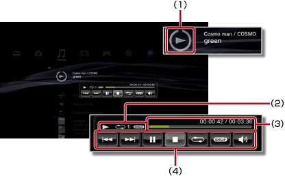

Música > Utilizar o painel de controlo em tamanho reduzido
Utilizar o painel de controlo em tamanho reduzido
Utilize o painel de controlo em tamanho reduzido para efectuar diversas funções enquanto é reproduzida música.
1. |
Enquanto é reproduzida música, prima o botão PS. |
||||||||
|---|---|---|---|---|---|---|---|---|---|
2. |
Utilize os botões de direcção para seleccionar o ícone do conteúdo de música que está a ser reproduzido em 
|
Notas
- O ícone do conteúdo de música que está a ser reproduzido é apresentado directamente abaixo do ícone
 (Música).
(Música). - O painel de controlo em tamanho reduzido pode ser oculto premindo o botão
 enquanto é reproduzida música.
enquanto é reproduzida música.
Anterior

Regressa ao início da faixa actual ou anterior.
Seguinte
Vai para o início da faixa seguinte.
Pausa
Interrompa a reprodução.
Parar
Pára a reprodução e oculta o painel de controlo em tamanho reduzido.
Aleatório
Reproduz faixas por ordem aleatória.
Repetir
Reproduz faixas repetidamente. Pode seleccionar um dos três modos de repetição (indicados a seguir) premindo o botão  .
.
 |
Reproduz uma faixa repetidamente. |
|---|---|
|
Reproduz todas as faixas repetidamente. |
| Sem apresentar | Limpa a reprodução repetida e reproduz todas as faixas por ordem. |
Controlo de volume
Ajuste o nível da saída de volume das faixas que estão a ser reproduzidas em (Música). Pode seleccionar um de nove níveis.
Nota
A saída de áudio pode ficar destorcida se o nível de volume for definido muito alto. Caso isto aconteça, baixe o nível.